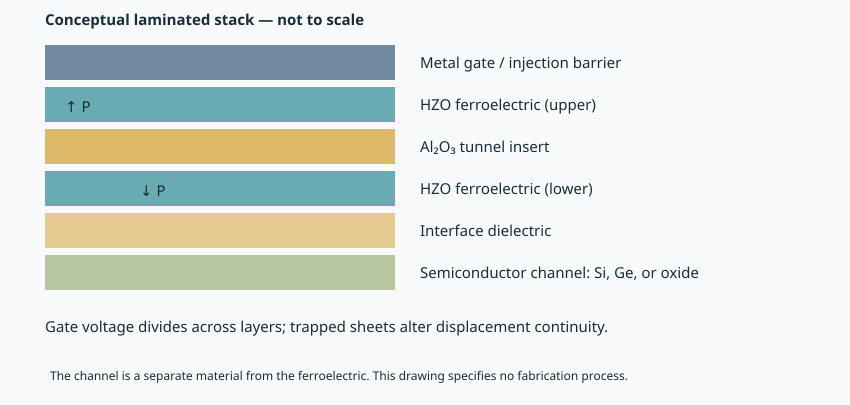
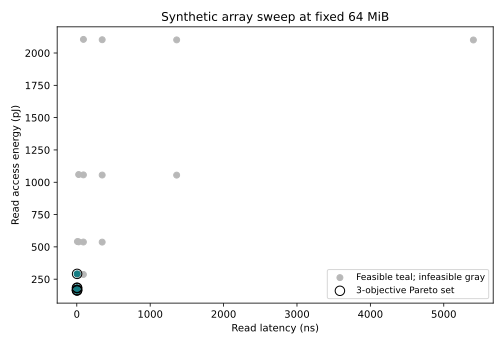

Orientation · about 15 minutes with figures and checkpoints
What Khan's research is trying to connect
The research centers on how thin-film electronic materials acquire, preserve, and reveal a useful state—and how that state could support memory and computation. For a reader returning from classical Si/Ge semiconductor physics, the major conceptual shift is that a gate stack is no longer just a fixed insulator. It may contain a switchable structural polarization, mobile or trapped charge, multiple phases, and a history-dependent interface. Its electrical behavior depends on what happened before the measurement.
The verified researcher is Prof. Asif Khan at Georgia Tech, ECE with a courtesy MSE appointment, also publishing as Prof. Asif Khan and A. I. Khan. Official university profiles and publisher identifiers agree. The publication baseline spans 26 September 2021–26 September 2026, with older foundational work separated. It contains 101 deduplicated scholarly records, including conference items and non-research bibliographic objects. Four unrelated or unverified author matches were excluded. The broad inventory is not a claim that all papers were critically read: 14 received selected full-text assessment; 87 remain metadata-only. Inspect the inventory and version links.
1. A retained state is useful only if it can be read reliably
In a ferroelectric, an electric field can switch polarization between distinguishable states. Polarization is dipole moment per volume, with SI units C/m². Its bound charge changes electrostatic boundary conditions. In a field-effect transistor, that can shift the relation between gate voltage and channel current, allowing a stored state to be read electrically.
But a shifted current–voltage curve can also arise from trapped charge or damage. Measured terminal charge includes more than the switchable polarization. A larger hysteresis loop therefore does not automatically mean a larger useful memory window. You need structural evidence, controlled pulse measurements, leakage separation, read conventions, and state history. This is why the course begins with electrostatics and measurement rather than a list of record-breaking device numbers.

The materials are also diverse. Hafnia/zirconia systems are fluorite-derived oxides whose phase, defect population, and interfaces matter strongly. BaTiO₃ is a perovskite studied in an epitaxial setting, with different structural and growth constraints. In₂O₃-based channels and doped variants carry current; they are not the ferroelectric layer. Keeping those roles separate prevents apparently similar “oxide” results from being merged into one nonexistent device.
2. Interfaces turn a material promise into a tradeoff
A thin interfacial dielectric can influence leakage, voltage division, screening, and damage. Improving one property can worsen another. For example, a thicker insulating barrier may suppress a leakage path while increasing the voltage required to switch the ferroelectric. A thinner barrier can improve electrostatic coupling while creating a reliability problem. Trapped charge can screen polarization or distort the read window, depending on location and history.
Recent selected papers explore laminated HZO/Al₂O₃ stacks, oxygen-related processing, oxide channels, and how these choices affect electrical or thermal behavior. The thermal comparison uses the same gate stack with different channels, making the comparison more informative than unrelated device records. Yet survival after a specified anneal does not establish service lifetime in a powered, packaged system. A radiation-response experiment similarly does not establish a space-qualified storage product. The course keeps those distinctions visible. Sources and conditions.
An especially useful question is whether the intervention is independently controlled. Changing an ALD oxidant can change impurities, oxygen chemistry, interfaces, and phase fractions together. A larger memory window is a result; assigning it to one microscopic cause is an inference requiring additional measurements. Microscopy, spectroscopy, reversal curves, and modeling can support the explanation, but each has artifacts and identification limits.
3. A model is a claim about which observations it can predict
The representative chapter uses a published empirical branch model with a precisely specified synthetic capacitor. It derives how polarization, linear dielectric displacement, and field relate, then reproduces the curves in Python and ngspice. It also fits newly generated noisy data and checks withheld samples. This is a clean reproducibility exercise because the equations and inputs are available.
The surprising lesson is that a good fit is not enough. Distinct parameter combinations can fit saturated data similarly, and a polarization coercive field can differ from the zero crossing of measured displacement. Without stating the measured quantity and sampled regime, an extracted parameter can be numerically stable but physically misleading.
The transient circuit uses a separately labeled double-well teaching model. Its assumed kinetics are not inferred from static curves. It demonstrates programming, a retained normalized state, and read contrast; it does not establish an experimental device's retention, endurance, or write energy. The closest acquired empirical FeFET source still lacks a complete verified author deck and matched calibration inputs. The feasibility assessment lists exactly what is missing.
The 2026 AI-related papers extend this model-building theme. A retention surrogate uses a specified TCAD configuration, while an agentic workflow helps select and calibrate physical models using a proprietary simulator. NVIDIA and Samsung affiliations establish research connections. They do not demonstrate ferroelectric memory inside a shipping NVIDIA accelerator. A faster surrogate is useful only within a validated domain, and a better curve fit still requires tests on conditions that discriminate competing mechanisms.
4. Arrays add costs that a single device cannot reveal
A memory array needs access, sensing, references, programming drivers, address selection, interconnect, and often error correction. Long wires introduce resistance and capacitance. More banks can improve parallelism and shorten local wires but require additional peripheral circuitry and area. A smaller bitcell can therefore coexist with a less favorable complete macro.
The array project enumerates 24 hypothetical organizations at fixed 64 MiB capacity. It rejects designs violating latency, area, or error constraints and identifies finite Pareto tradeoffs. The selected example has 32 banks and a 256-bit interface, but the answer belongs to the declared cost model, not to a foundry. The exercise teaches how an apparently optimal device choice can become infeasible when read distributions or peripheral costs are included.

The digital demonstrator then supplies actual Verilog: request handshake, fixed read/write cycle counts, reset behavior, and fault response. Both the original controller and its generically synthesized netlist pass the same testbench. Physical views show a memory-block footprint, pins, symbolic cell array, and floorplan. They remain abstract because the research stack lacks a compatible process kit and characterized macro. Working RTL does not manufacture a ferroelectric bitcell.
5. The workload decides which memory improvement matters
Persistent storage, working memory, caches, and compute-in-memory serve different roles. Faster storage can reduce model-loading time but leave steady-state inference unchanged if all weights and KV state are already resident in working memory. A compute-in-memory proposal changes the data path and must account for conversion, precision, calibration, control, and the operations it cannot perform.
Inference also has different phases. Prefill processes the prompt with substantial parallel work; decoding produces successive tokens while reading weights and an expanding key–value cache. Batching can reuse weights but consumes cache capacity and changes latency. Reducing numerical precision can reduce traffic while changing output quality. The course includes a constrained quantization exercise, but it does not confuse a random linear-layer error with language-model accuracy.
A roofline bound identifies whether compute or bandwidth is limiting. If the interface already caps traffic, increasing internal array bandwidth further may produce no workload gain. If communication is limiting a distributed training step, faster local memory may leave the critical collective unchanged. The right downward question is: which sustainable bandwidth, capacity, error, and write-duty-cycle contract does this workload actually require?
6. Facility energy makes the missing fractions visible
A tenfold improvement to an operation occupying 5% of baseline time yields only about 1.047× total speedup under a fixed architecture. A tenfold reduction in a component contributing 5% of fixed-work energy saves only 4.5% of total energy. A redesign can change these fractions, but its new costs need evidence.
Server energy per token includes baseline power divided by useful throughput. Higher utilization amortizes that baseline, but variable arrivals create queueing delay. The final project therefore minimizes modeled facility energy subject to latency and power limits. Its best tested utilization is 0.7; more heavily loaded points have lower energy per token but violate the mean-response target. These are transparent teaching calculations, not performance estimates for a named machine.
The capstone follows an assumed polarization change upward through read margin, array feasibility, workload traffic, and facility energy. It also reverses the calculation: a Gaussian raw-error target sets a required read-window distribution, and only a validated coupling model could turn that into a material specification. In the example, baseline server power makes a desired facility-energy target impossible even if all modeled dynamic energy vanishes. That negative result is valuable because it tells you where a device improvement cannot help.
How to use the program
First complete the Si/Ge diagnostic. Then work through the materials and representative modeling chapters before reading the newest preprints. Run the numerical project at each major stage, change one assumption, and explain which conclusion changes and why. Finish by defending a new-paper assessment that separates measured evidence, authors' inference, teaching assumptions, and executable checks.
This public edition preserves the 26 September 2026 baseline. New records and revisions require identity verification and scientific review before the course is updated. Three laboratory/center sources were inaccessible during baseline acquisition; that coverage limit remains explicit.
The most productive standard for the whole course is simple: every arrow in a materials-to-system claim must name its relationship, units, conditions, evidence, and missing measurement. Once you can do that, you can assess both the promise and the limits of a new paper without dismissing either.